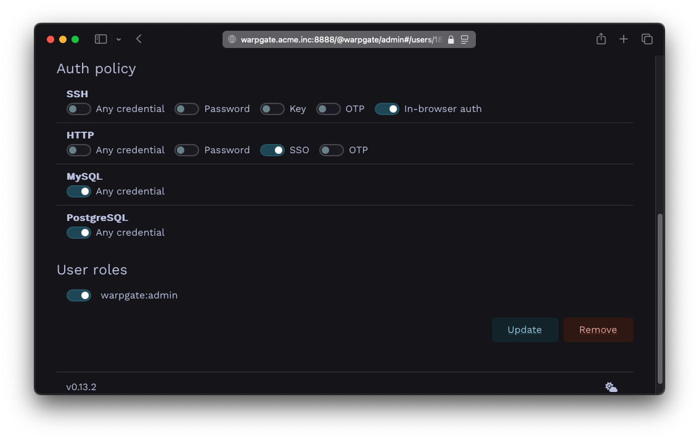
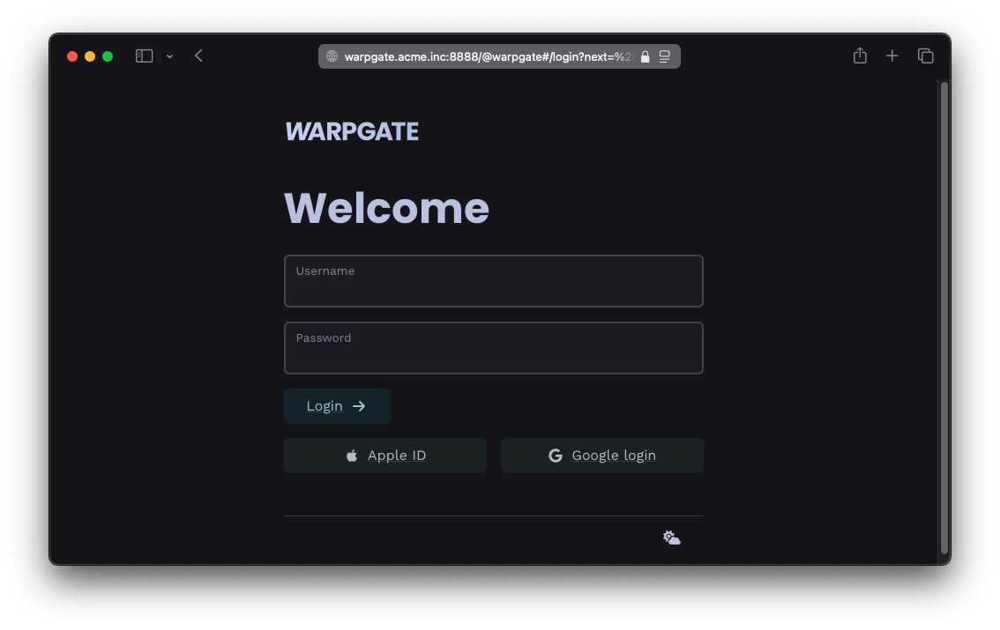
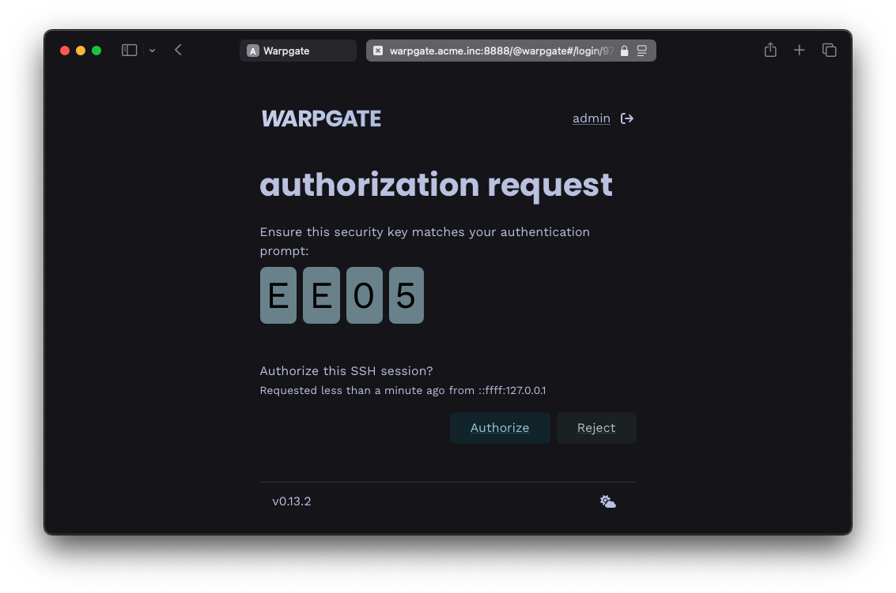

Single sign-on§
Intro§
Warpgate can use arbitrary OpenID Connect (OIDC) providers to authenticate users based on their verified emails.
OIDC providers include, but are not limited to:
- Google Accounts
- Sign in with Apple
- GitLab
- Microsoft Azure
- Okta
Configuration§
Host header§
To use SSO, Warpgate needs to know what its external hostname is. Starting with v0.12, Warpgate uses the Host header to determine the external host. If you're running behind a reverse proxy, the proxy needs to pass through the Host header.
External host setting (legacy)§
Warpgate would try its best to figure it out based on the client's request, but it's better if you set it explicitly via the top-level external_host config option:
+ external_host: warpgate.acme.inc
external_hostcan include a port as well
Obtaining app credentials from a provider§
You'll need to register your Warpgate instance as an "app" (terminology varies per provider) at the provider and obtain a Client ID and a Client secret. You'll need to provide a Redirect URL which - which will be verified by the SSO provider.
The redirect URL (aka return URL) for Warpgate is https://<warpgate-external-host>/@warpgate/api/sso/return.
Okta provides excellent guides on registering an app with various providers:
Adding credentials to the config file§
With a Client ID and a Client Secret in hand, you can add these to the Warpgate config file:
Google§
external_host: warpgate.acme.inc:8888
+ sso_providers:
+ - name: google
+ label: Google login
+ provider:
+ type: google
+ client_id: 1234...
+ client_secret: ABC...
Microsoft Azure§
external_host: warpgate.acme.inc:8888
+ sso_providers:
+ - name: azure
+ provider:
+ type: azure
+ client_id: 123...
+ client_secret: ABC...
+ tenant: XYZ...
Apple§
external_host: warpgate.acme.inc:8888
+ sso_providers:
+ - name: apple
+ label: Apple ID
+ provider:
+ type: apple
+ team_id: ABC... # your Apple Team ID
+ client_id: com.warpgate.test # your Service ID (not the App ID!)
+ key_id: ABC... # the ID of the key you've created
+ client_secret: ABC... # Base64 encoded contents of the .p8 private key file you've got from Apple
Custom§
external_host: warpgate.acme.inc:8888
+ sso_providers:
+ - name: custom
+ label: ACME SSO
+ provider:
+ type: custom
+ client_id: 123...
+ client_secret: ABC...
+ issuer_url: https://sso.acme.inc
+ scopes: ["email"]
OIDC audience verification§
Normally, the OIDC provider should issue a token that is only valid for Warpgate itself. If this is not possible, you have two options:
- Explicitly whitelist additional trusted audiences:
sso_providers:
- name: custom
label: ACME SSO
+ additional_trusted_audiences:
+ - one
+ - two
provider:
...
- Fully ignore any additional audiences in the token (v0.13.1+):
sso_providers:
- name: custom
label: ACME SSO
+ trust_unknown_audiences: true
provider:
...
Automatically creating users§
Warpgate can automatically create users for new SSO logins. The SSO server has to provide the preferred_username OIDC claim for this to work.
sso_providers:
- name: custom
label: ACME SSO
+ auto_create_users: true
provider:
...
Requiring SSO for a user§
Users are linked to their SSO accounts based on their email. If the SSO provider advertises email verification status, Warpgate will require the email to be verified.
To link a user to SSO, click Add SSO in the credentials section, and then (optionally) set SSO as the only accepted credential type for HTTP connections.

Setting SSO as the only authentication method
Here, we've also set SSO to be the only allowed login credential for HTTP auth, and have set SSH to use out-of-band web authentication.
In-browser auth(OOB web authentication) means that Warpgate will send a login link to the SSH client and will wait for the user to authenticate themselves in a browser. The auth requirements will be the same as set for thehttpprotocol.
❯ ssh cwilde:tnt@warpgate.acme.inc -p 2222
----------------------------------------------------------------
Warpgate authentication: please open https://warpgate.acme.inc/@warpgate#/login/31282192-ad29-4fa7-bdc2-5b481d531e58 in your browser
Make sure you're seeing this security key: E E 0 5
----------------------------------------------------------------
(cwilde:tnt@warpgate.acme.inc) Press Enter when done:

Login page with SSO buttons

In-browser auth request
Setting roles via SSO§
With custom type OIDC providers, Warpgate can also sync the user's role memberships when they log in.
For that, your provider must set a warpgate_roles OIDC claim (a JSON array of role names) either in the ID Token or the UserInfo response. By default, Warpgate will use these names as-is and completely overwrite the user's memberships.
You can also set role_mappings in the provider's configuration to explicitly map claim values to role names. In this case, only the roles mentioned here will be synced SSO, and the memberships in other roles won't be affected. For example:
- name: oidc-custom
label: Custom SSO
provider:
type: custom
client_id: ...
client_secret: ...
issuer_url: ...
scopes: []
role_mappings:
'QA group': 'qa'
Admins: 'warpgate:admin'